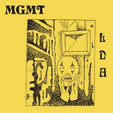

| video name | Description | Length | Album Art | FaceBook | Instagram | Twiter |
| Jerry Was a Racecar Driver | “Jerry Was a Race Car Driver” is a song about a young man named Jerry who loves driving his fast car around his hometown of El Sobrante. It also compares Jerry’s frivolous lifestyle with the exploits of a fireman named Captain Pierce. In the end, both men meet their fates in equally uninspiring ways. | 3:38 | | Primus FaceBook | Primus Instagram | Primus Twiter |
| Touch of Grey | The song is about the band aging gracefully. The phrase "Touch Of Grey" is a reference to getting older, as for most people, their hair starts getting grey as they age. | 4:52 | | Grateful Dead FaceBook | Grateful Dead Instagram | Grateful Dead Twitter |
| Them Changes | These lyrics, sung against the playful bass line, help to bring gravity and weight to “Them Changes”. While the intro is fun, the story being painted through the lyrics is one of heartbreak, which, to Thundercat, is a heinous crime. | 3:33 | | Thundercat FaceBook | Thundercat instagram | Thundercat Twiter |
| My Little Dark Age | “Little Dark Age” is about trying to hide a dark secret and keeping it to yourself, hence the title. The secret itself could be a myriad of things depending on your interpretation. | 5:11 |  | MGMT's FaceBook | MGMT's Instagram | MGMT's Twitter |